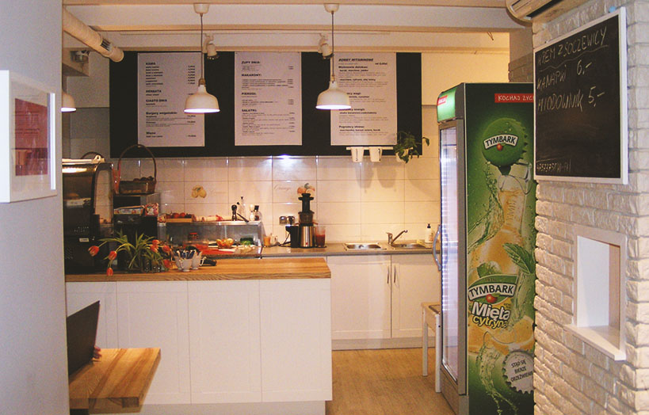

BISTRO OPARTE NA ZDROWEJ, DOMOWEJ KUCHNI.
TYLKO NATURALNE SKŁADNIKI I NAJLEPSZE PRODUKTY!
TYLKO NATURALNE SKŁADNIKI I NAJLEPSZE PRODUKTY!
O NAS

MARCELINA I WIKTOR
Znamy się od lat. W małym bistro w pobliżu Uniwersytetu Ekonomicznego stworzyliśmy przytulny kącik, gdzie można wypić kawę lub coś zjeść. Staramy się karmić Was smacznie, zdrowo, kolorowo, a przede wszystkim świeżo. Odnajdziecie u nas akcenty z kuchni naszych babć - zapach ziół, wspomnienie Kresów i Galicji, a także przepisy przywiezione z podróży. Również wegetarianie znajdą tu coś dla siebie.
MENU
 Stale trafiamy na nowe inspiracje, dlatego nasze menu podlega zmianom. Szukajcie naszych nowych kulinarnych propozycji na facebooku i w bistro.Studentom oferujemy 10% zniżki.
Stale trafiamy na nowe inspiracje, dlatego nasze menu podlega zmianom. Szukajcie naszych nowych kulinarnych propozycji na facebooku i w bistro.Studentom oferujemy 10% zniżki.
GALERIA
GODZINY OTWARCIA
PONIEDZIAŁEK - PIĄTEK 730-1700
SOBOTA - NIEDZIELA 730-1500
SOBOTA - NIEDZIELA 730-1500
KONTAKT
MAŁE CO NIECO
40-228 Katowice
ul. 1 Maja 41
789 445 020
40-228 Katowice
ul. 1 Maja 41
789 445 020
ZAPRASZAMY
WSZELKIE PRAWA ZASTRZEŻONE 2016-